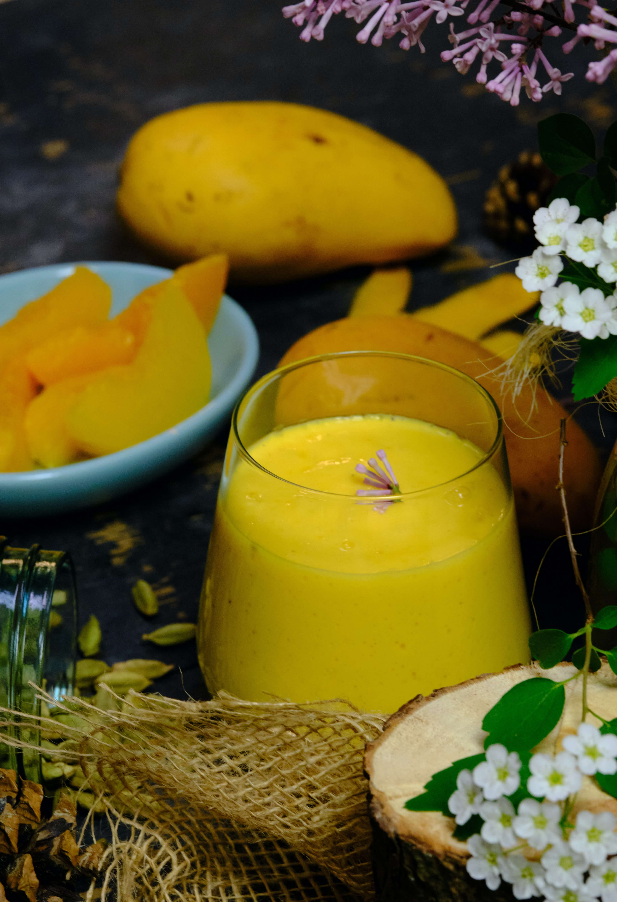
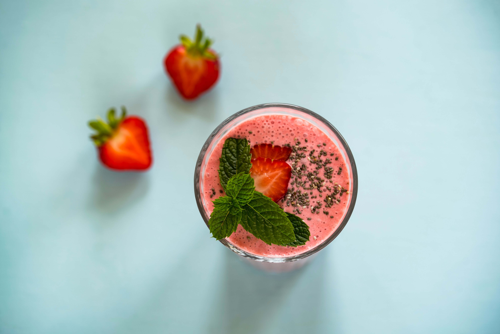
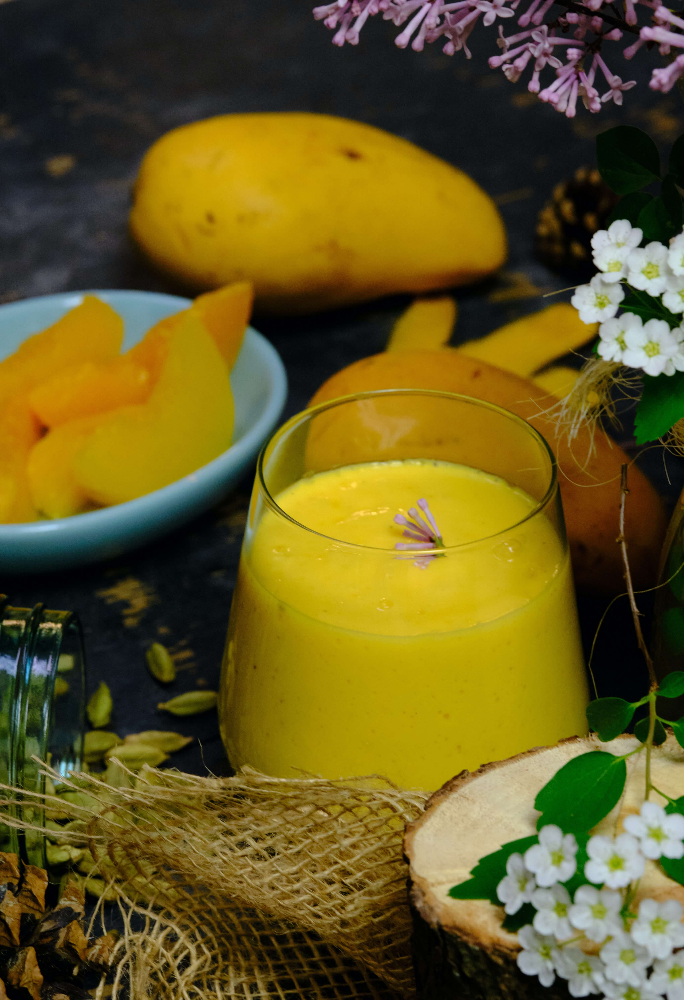
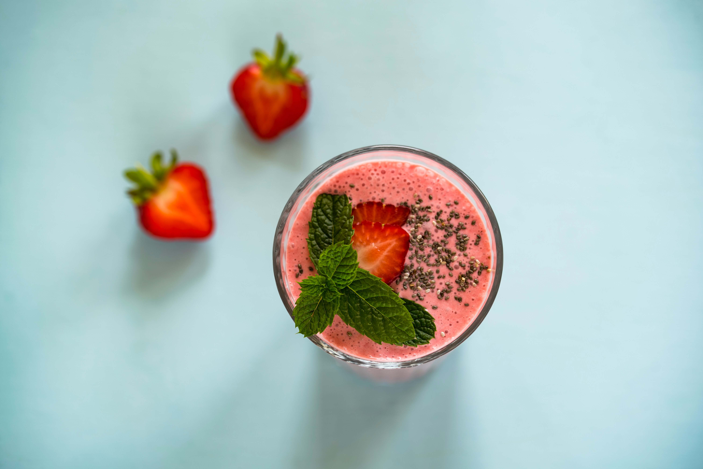

Naturally grown, locally sourced, delicious.
We are proud to offer a wide selection of premium quality organic fruit, grown right here in Carlsbad, California. Our fruit is handpicked and carefully selected to ensure that you receive only the freshest and most flavorful produce. What makes our fruit so special is the combination of Carlsbad's perfect Mediterranean climate and our commitment to organic farming practices. Our farmers prioritize soil health, biodiversity, and sustainability, resulting in healthier and tastier produce that is free of harmful chemicals. By choosing our organic fruit, you can be assured that you are making a healthy and sustainable choice for you and the environment. Plus, by supporting our local farmers, you are contributing to the local economy and reducing the carbon footprint associated with importing produce from far-flung regions. Visit us today and taste the difference that organic fruit grown in Carlsbad, California can make!
Weather Forecast

°F
Wind Speed: mph
Wind Chill: N/A